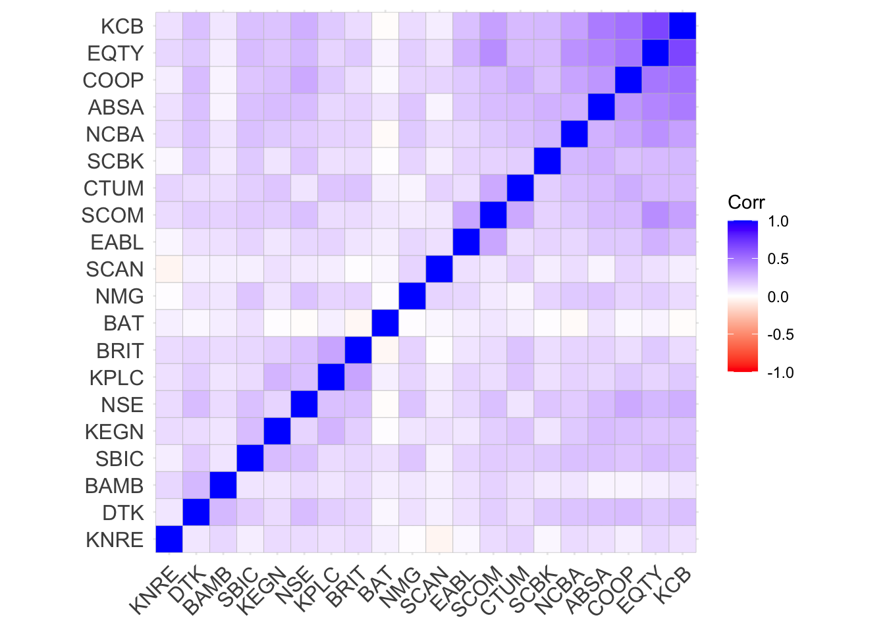
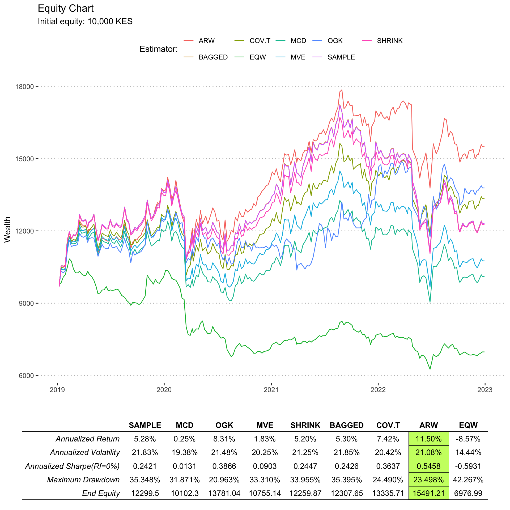

| Company Name | Ticker | Industry |
|---|---|---|
| Absa Bank Kenya PLC | ABSA | Banking |
| Diamond Trust Bank Kenya Ltd Ord 4.00 | DTK | Banking |
| Equity Group Holdings Plc Ord 0.50 | EQTY | Banking |
| KCB Group Plc Ord 1.00 | KCB | Banking |
| NIC Group Plc Ord 5.00 | NCBA | Banking |
| Stanbic Holdings Plc ord.5.00 | SBIC | Banking |
| Standard Chartered Bank Kenya Ltd Ord 5.00 | SCBK | Banking |
| The Co-operative Bank of Kenya Ltd Ord 1.00 | COOP | Banking |
| Nation Media Group Ltd Ord. 2.50 | NMG | Commercial and Services |
| WPP Scangroup Plc Ord 1.00 | SCAN | Commercial and Services |
| Bamburi Cement Ltd Ord 5.00 | BAMB | Construction and Allied |
| KenGen Co. Plc Ord. 2.50 | KEGN | Energy and Petroleum |
| Kenya Power & Lighting Co Ltd Ord 2.50 | KPLC | Energy and Petroleum |
| Britam Holdings Plc Ord 0.10 | BRIT | Insurance |
| Kenya Re Insurance Corporation Ltd Ord 2.50 | KNRE | Insurance |
| Centum Investment Co Plc Ord 0.50 | CTUM | Investment |
| Nairobi Securities Exchange Plc Ord 4.00 | NSE | Investment Services |
| British American Tobacco Kenya Plc Ord 10.00 | BAT | Manufacturing & Allied |
| East African Breweries Ltd Ord 2.00 | EABL | Manufacturing & Allied |
| Safaricom Plc Ord 0.05 | SCOM | Telecommunications |
This article investigates the problem of covariance matrix estimation for tangency portfolios using data from the Nairobi Securities Exchange (NSE) Specifically, I compare several methods of covariance matrix estimation and evaluate their performance in constructing tangency portfolios. The results provide insights into the most effective methods for estimating the covariance matrix in the context of the NSE, which can be valuable for portfolio managers and investors seeking to optimize their investment portfolios in the NSE.
Introduction
Most investors base their investment decisions on two metrics: the mean(return), and variance(risk)1, where some choose to invest in portfolios giving the highest return for a given level of risk, while others invest in portfolios giving the lowest risk, for a given level of return.
1 The use of variance and volatility as a measure of portfolio risk, has a long history. For instance, see Fisher (1906) and Tobin (1958)
Markowitz (1952), was the first to formalize portfolio risk and asset selection, in what came to be known as Markowitz Portfolio Theory (MPT). MPT states that the portfolio’s return is given by the weighted average of the expected returns for the individual assets in the portfolio and the portfolio’s risk is equal to the variance of the portfolio returns which is a function of the variances and covariances between securities and their weights in the portfolio.
This is shown below:
\[\mu_p = \sum_{i=1}^n w_i\mu_i\] \[\sigma^2_p = \sum_{i=1}^n w_iw_j*\sigma_{ij}\] Where:
\(\mu_p, \sigma^2_p\): The portfolio’s expected return and variance respectively.
\(n\): The number of assets in the portfolio.
\(\mu_i\): the expected returns for asset \(i\).
\(w_i, w_j\): The weight invested in assets \(i\) and \(j\) respectively.
\(\sigma^2_{ij}\): The covariance between asset \(i\) and \(j\). If \(i = j\), then \(\sigma^2_{ij}\) is the variance of the \(i^{th}\) asset in the portfolio.
The efficient frontier and efficient portfolios
The efficient frontier is a concept used in modern portfolio theory that helps investors to identify the optimal portfolio that maximizes returns for a given level of risk. The theory assumes that investors are risk-averse and will choose the portfolio with the highest expected return for a given level of risk. It is usually represented as a graph that plots the expected return and standard deviation2 of all possible portfolios that can be constructed from a set of assets.
2 as a measure of risk
The portfolios on the efficient frontier are considered to be efficient because they provide the highest possible expected return for a given level of risk. Thus, investors can choose any portfolio on the efficient frontier that suits their level of risk tolerance. An important aspect to note from the efficient frontier is: investors can only increase their expected return by taking on more risk.
Tangency portfolio
A tangency portfolio, is a portfolio that maximizes the risk-adjusted return for a given level of risk aversion. Specifically, a tangency portfolio lies on the efficient frontier, and it is tangent to the capital market line3. It is widely used in portfolio management to construct investment portfolios that offer the highest expected return for a given level of risk or the lowest level of risk for a given expected return.
3 Simple a straight line representing the risk/reward profiles of different combinations of a risky portfolio with a riskless asset
Despite the emergence of alternative portfolio construction techniques, such as risk parity, tangency portfolios remain relevant in investment management due to their ability to provide an optimal balance between risk and return. They are a key component of modern portfolio theory and provide a useful reference point for evaluating portfolio performance. They are constructed based on the efficient frontier - as such, they represent the most efficient way to achieve a particular level of expected return, making them an important tool for portfolio optimization.
The optimization problem for the tangency portfolio can be expressed follows:
Suppose we have a universe of \(n\) assets with returns \(\mathbf{\mu}\) and covariance matrix \(\mathbf{\Sigma}\). We want to construct a portfolio with weights \(\mathbf{w}\) that maximizes the Sharpe ratio subject to the constraint that all weights are non-negative, and sum to one:
\[max_w \hspace{2 mm} h(w) = \frac{\mu^Tw - r_f}{w^T \Sigma w}\] \[\text{subject to} \quad \mathbf{w} \geq \mathbf{0}, \hspace{2 mm} \sum_{i=1}^n w_i = 1\] The quantity \(h(w)\) is precisely the Sharpe ratio.
Solving for \(w\), gives:
\[\mathbf{w} = \frac{\mathbf{\Sigma}^{-1} (\mathbf{\mu} - r_f \mathbf{1})}{\mathbf{\mathbf{1^T} \Sigma}^{-1}(\mathbf{\mu} - r_f \mathbf{1})} \]
From the solution above, the covariance matrix and mean vector are crucial in the solution for the tangency portfolio. The mean vector represents the expected returns for each asset in the portfolio, while the covariance matrix represents the co-movements between the returns of each asset in the portfolio.
The optimal portfolio is found by balancing the expected returns and risks of the individual assets in the portfolio, which is done using the mean vector and covariance matrix. In the next section, we explore several ways of estimating the expected returns and covariance matrix for the assets in the portfolio
In the next section, we review covariance matrix estimation methods present in literature, giving their formulations, and using them in computing optimal allocations to the investment universe. We briefly begin with the sample covariance matrix, and proceed to alternative covariance matrix estimation methods.
The sample covariance matrix (SAMPLE)
The sample covariance matrix is among the earliest and commonly used estimator, especially because it arises as the maximum likelihood solution under normality. It is calculated from the historical returns of the assets in the portfolio, with the assumption that the historical returns of the assets are representative of their future returns. This assumption may be violated, especially in dynamic markets.
The sample location estimate for a portfolio of \(n\) observations and \(p\) assets is given by:
\[ E(r_p) = \sum_{i=1}^{n} w_i E(r_i)\] The sample covariance matrix is given by:
\[\begin{equation} \hat{\Sigma} = \frac{1}{n-1} \sum_{i=1}^{n} (\mathbf{x_i} - \boldsymbol{\bar{x}})(\mathbf{x_i} - \boldsymbol{\bar{x}})^T, \end{equation}\]
where:
\(E(r_p)\) is the expected return of the portfolio
\(E(r_i)\) is the expected return of the \(i\)th asset
\(\mathbf{x_i}\) is the \(i\)-th observation vector,
\(\boldsymbol{\bar{x}}\) is the sample mean vector, and the superscript \(T\) denotes the matrix transpose operation.
Note that \(\hat{\Sigma}\) is a symmetric \(p \times p\) matrix.
One of the main drawbacks of the sample covariance matrix is that it is sensitive to outliers. Additionally, if the number of assets in the portfolio is large, singularity issues may emerge when computing the sample covariance matrix.
Since, the sample covariance matrix is sensitive to outlying observations, there is need to examine other ‘robust’ approaches to estimating the covariance matrix of historical stock returns. The robust methods provide alternative approaches to classical methods for location and scale estimates, as they are not affected by slight departures from model assumptions.
In the next section, we investigate some of the robust covariance estimators:
1. Minimum Covariance Determinant Estimator (MCD)
The MCD estimator is based on the concept of finding the subset of data points: \(h(>N/2)\) whose classical covariance matrix has the lowest possible determinant, which is a measure of the spread of the data.
When using the MCD estimator, the location estimate of a portfolio is given by the arithmetic mean of the asset returns in the robust subset, as follows:
\[\bar{r}_{MCD} = \frac{1}{n_{robust}} \sum_{i=1}^{n_{robust}} r_i\] Where:
\(\bar{r}_{MCD}\) is the location estimate using the MCD estimator,
\(n_{robust}\) is the number of assets in the robust subset, and
\(r_i\) is the return of the \(i\)th asset in the robust subset.
The MCD estimator for the covariance matrix is computed as follows:
\[\begin{equation} \hat{\Sigma}_{MCD} = c_{p,n} \cdot \text{MAD}(\mathbf{X})^{-2} \cdot \sum_{i=1}^{h} w_i (\mathbf{x_i} - \boldsymbol{\bar{x}})(\mathbf{x_i} - \boldsymbol{\bar{x}})^T, \end{equation}\]
where:
\(\mathbf{X}\) is a \(n \times p\) matrix of observations,
\(\boldsymbol{\bar{x}}\) is the sample mean vector,
\(\text{MAD}(\mathbf{X})\) is the Median Absolute Deviation of the observations,
\(h\) is the number of non-outlier observations,
\(w_i\) are weights assigned to each non-outlier observation, and
\(c_{p,n}\) is a constant that depends on the dimension of the data and the number of observations.
One of the main strengths of the MCD estimator is its ability to handle both symmetric and asymmetric outliers in the data, making it robust. It is also computationally efficient and can be used with high dimensional datasets, and portfolios with a large number of assets.
A limitation of the MCD estimator is that it assumes that the data points are multivariate normal, which may not always hold true in practice. The MCD estimator may also produce unreliable estimates of the covariance matrix when the proportion of outliers in the data is very high.
2. Minimum Volume Ellipsoid Estimator (MVE)
The MVE is a multivariate location and scale estimator which uses a subset of the data in its computation. It is based on the concept of fitting an ellipsoid to the data points that minimizes its volume, while ensuring that it contains a specified proportion4 of the data points. It can be thought of as estimating the mean and covariance of the ‘good part’ of the data.
4 This specified proportion is based on user-supplied quantiles
When using the MVE estimator, the location estimate of a portfolio is given by the arithmetic mean of the asset returns in the ellipsoid that encloses the robust subset, as follows:
\[\bar{r}_{MVE} = \frac{1}{n_{robust}} \sum_{i=1}^{n_{robust}} r_i\]
where:
\(\bar{r}_{MVE}\) is the location estimate using the MVE estimator,
\(n_{robust}\) is the number of assets in the robust subset, and
\(r_i\) is the return of the \(i\)th asset in the robust subset.
The MVE estimator for the covariance matrix is computed as follows:
\[\begin{equation} \hat{\Sigma}_{MVE} = \frac{n}{m} \cdot \text{cov}_{\text{MCD}}(\mathbf{X}), \end{equation}\]
where:
\(\mathbf{X}\) is a \(n \times p\) matrix of observations,
\(\text{cov}_{\text{MCD}}(\mathbf{X})\) is the covariance matrix computed using the MCD estimator, and
\(m\) is the number of observations used to compute the MCD estimator.
Other than being robust to outliers, the MVE provides a more accurate estimate of the covariance matrix when the distribution of the asset returns is non-normal. In such cases, the MVE estimator can capture the non-linear relationships between the assets and produce more accurate estimates of the covariance matrix.
However, the MVE estimator can be computationally expensive to calculate, especially when dealing with portfolios with a large number of assets and the assumption that data points are elliptically distributed may not always hold true in some cases.
3. Orthogonalized Gnanadesikan-Kettenring Estimator (OGK)
This method is based on the concept of orthogonalizing the data matrix to remove any correlations between the variables and then estimating the covariance matrix from the resulting matrix.
The OGK estimate for the robust location measure is defined as:
\[\mu(X) = \frac{\sum_i w_ix_i}{\sum_i w_i}\]
Where,
\(w_i\) are the robustness weights compute as:
\[w_i := w_{c1}\frac{(x_i - med(X))}{MAD(X)}\]
The OGK estimator for the covariance matrix can be computed as follows:
\[\begin{equation} \hat{\Sigma}_{OGK} = \frac{1}{n} \cdot \sum_{i=1}^{n} \lambda_i(\mathbf{S}) \cdot \mathbf{V_i} \cdot \mathbf{V_i}^T, \end{equation}\]
where
\(\mathbf{S}\): is the sample covariance matrix,
\(\lambda_i(\mathbf{S})\) and \(\mathbf{V_i}\) are the eigenvalues and eigenvectors of \(\mathbf{S}\), respectively, and \(n\) is the number of observations.
One of the main strengths of the OGK estimator is its ability to handle datasets with high levels of multicollinearity5, which can cause instability in the estimates of the covariance matrix. The OGK estimator reduces this instability by orthogonalizing the data matrix
5 High correlations between the variables in the data
The OGK estimator also produces estimates of the covariance matrix that are more accurate than those obtained using the sample covariance matrix when the distribution of the asset returns is non-normal.
Some limitations to using the OGK estimator include: it can be computationally expensive to calculate, especially when dealing with portfolios with a large number of assets. The OGK estimator may also produce unreliable estimates of the covariance matrix when the proportion of outliers in the data is very high.
4. Nearest-Neighbour Variance Estimator (NNV)
The NNV estimator is based on the concept of using the k-nearest neighbors of each data point to estimate its variance, which is then used to estimate the covariance matrix.
The location estimate is given by the arithmetic mean of the asset returns in the dataset. The formula for the location estimate using the NNV estimator is:
\[\bar{r}_{NNV} = \frac{1}{n} \sum_{i=1}^{n} r_i\]
where:
\(\bar{r}_{NNV}\) is the location estimate using the NNV estimator,
\(n\) is the number of assets in the portfolio,
and \(r_i\) is the return of the \(i^{th}\) asset in the portfolio.
The NNV estimator for the covariance matrix is computed as follows:
\[\begin{equation} \hat{\Sigma}_{NNV} = \frac{2}{n(n-1)h^2} \sum_{i=1}^{n} \sum_{j=1}^{n} w\left(\frac{|\mathbf{x_i} - \mathbf{x_j}|}{h}\right) (\mathbf{x_i} - \mathbf{\bar{x}})(\mathbf{x_j} - \mathbf{\bar{x}})^T, \end{equation}\]
where
\(\mathbf{x_i}\) and \(\mathbf{x_j}\) are the \(i^{th}\) and \(j^{th}\) observations, respectively,
\(\mathbf{\bar{x}}\) is the sample mean,
\(h\) is a smoothing parameter, and \(w(\cdot)\) is a weighting function6.
6 A common choice for \(w(\cdot)\) is the Epanechnikov kernel.
One of the main strengths of the NNV estimator is its ability to handle datasets with a large number of assets, and thus, it can produce estimates of the covariance matrix that are less affected by the curse of dimensionality than other methods.
Limitations to using the NNV estimator include: it assumes that the data points are independent and identically distributed, which may not always hold true in practice. Additionally, the NNV estimator may produce unreliable estimates of the covariance matrix when the dataset contains outliers or when the nearest neighbors parameter \(k\) is chosen incorrectly.
5. Shrinkage Estimator (SHRINK)
The Shrinkage estimator is based on the concept of shrinking the sample covariance matrix towards a target matrix such as the diagonal matrix or a structured matrix, which can improve the accuracy of the estimated covariance matrix.
The Shrinkage Estimator of the location parameter is given by the arithmetic mean of the asset returns.
The Shrinkage Estimator for the covariance matrix is computed as follows:
\[\begin{equation} \hat{\Sigma}_{Shrink} = \alpha \cdot \hat{\Sigma}_{D} + (1-\alpha) \cdot \hat{\Sigma}_{S}, \end{equation}\]
where:
\(\hat{\Sigma}_{D}\) is the diagonal matrix of the sample variances,
\(\hat{\Sigma}_{S}\) is the target matrix, and \(\alpha\) is the shrinkage intensity parameter that determines the degree of shrinkage towards the target matrix.
A common choice for the target matrix is the Ledoit-Wolf estimator, which is based on the assumption that the true covariance matrix can be expressed as a linear combination of a diagonal matrix and a low-rank matrix. The Ledoit-Wolf estimator is computed as follows:
\[\begin{equation} \hat{\Sigma}_{LW} = \gamma \cdot \hat{\Sigma}_{D} + (1-\gamma) \cdot \hat{\Sigma}_{L}, \end{equation}\]
where:
\(\hat{\Sigma}_{D}\) is the diagonal matrix of the sample variances,
\(\hat{\Sigma}_{L}\) is the low-rank matrix that minimizes the Frobenius norm distance to the sample covariance matrix, and
\(\gamma\) is a parameter that determines the degree of shrinkage towards the diagonal matrix.
The main strengths of the Shrinkage estimator is that it produces reliable estimates of the covariance matrix than the sample covariance matrix when the number of observations or assets is small, as well as when the number of assets is large, and thus, it is less affected by the curse of dimensionality than other methods.
However, there are also some limitations to using the Shrinkage estimator. The accuracy of the estimated covariance matrix depends on the choice of the target matrix. It is also important to note that, the Shrinkage estimator may produce unreliable estimates of the covariance matrix when the dataset contains outliers or when the amount of shrinkage is too large.
6. Bagging Estimator (BAGGED)
The bagged estimator is based on the concept of bootstrapping, which involves creating multiple samples of the original dataset and using these samples to estimate the covariance matrix.
The Bagging Estimator for the location parameter is then given by the average of the sample means:
\[ \boldsymbol{\tilde{r}} = \frac{1}{B} \sum_{b=1}^B \boldsymbol{\bar{r}}_b \]
where
\(\boldsymbol{\bar{r}}_b\) is the sample mean of the \(b\)th bootstrap sample, and
\(B\) is the number of bootstrap samples.
The Bagging Estimator for the covariance matrix is computed as follows:
\[\begin{equation} \hat{\Sigma}_{Bagging} = \frac{1}{B} \sum_{b=1}^{B} \hat{\Sigma}_{b}, \end{equation}\]
where \(\hat{\Sigma}_{b}\) is the sample covariance matrix computed from the \(b^{th}\) bootstrap sample, and \(B\) is the number of bootstrap samples used.
To generate each bootstrap sample, we randomly sample \(n\) observations with replacement from the original data. Then, we compute the sample covariance matrix from the bootstrap sample.
An advantage of the bagged estimator is: that it can handle datasets with non-normal distributions or with a high proportion of outliers. By creating multiple samples of the dataset, it can reduce the impact of extreme values on the estimated covariance matrix.
However, the accuracy of the estimated covariance matrix depends on the number of bootstrap samples (\(B\)) and the Bagged estimator may also produce unreliable estimates of the covariance matrix when the dataset contains highly correlated assets.
7. Multivariate Student’s t estimator (COV-T)
The Multivariate Student’s t estimator is a technique used to estimate the covariance matrix in portfolio optimization based on the assumption that the asset returns follow a multivariate Student’s t distribution, which can better capture the presence of outliers and heavy tails in the data compared to the normal distribution.
The Multivariate Student’s t Estimator for the location parameter is given by:
\[ \boldsymbol{\tilde{r}} = \frac{\sum_{i=1}^n w_i \boldsymbol{r}_i}{\sum_{i=1}^n w_i} \]
where:
\(\boldsymbol{r}_i\) is the \(i^{th}\) asset return vector, and
\(w_i\) is the weight assigned to the \(i^{th}\) asset, which is determined by the Mahalanobis distance of the \(i^{th}\) return vector from the empirical median of the returns, and the degrees of freedom parameter \(\nu\) of the Student’s t distribution.
The Multivariate Student’s t estimator for the covariance matrix is computed as follows:
\[\begin{equation} \hat{\Sigma}_{t} = \frac{\kappa}{\kappa-2} \cdot \frac{\sum_{i=1}^{n}(X_i-\bar{X})(X_i-\bar{X})^T}{n}, \end{equation}\]
where:
\(X_i\) is the \(i^{th}\) observation in the data,
\(\bar{X}\) is the sample mean,
\(n\) is the sample size, and
\(\kappa\) is a parameter that controls the degrees of freedom of the Student’s t-distribution.
The main strength of the Multivariate Student’s t estimator is that it can produce more reliable estimates of the covariance matrix than other methods when the dataset contains extreme values or when the returns are not normally distributed.
A key limitation to this method is that it assumes that the asset returns follow a multivariate Student’s t distribution, which may not always hold true in practice. Additionally, the Multivariate Student’s t estimator may produce unreliable estimates of the covariance matrix when the dataset contains highly correlated assets.
8. Adaptive Re-weighted estimator (ARW)
The Adaptive Re-weighted estimator is a technique based on the idea of iteratively re-weighting the observations based on their Mahalanobis distances from the current estimate of the mean and covariance matrix, which can improve the accuracy of the estimated covariance matrix. It is designed to be robust to outliers and heavy-tailed data.
\[\boldsymbol{\tilde{r}} = \boldsymbol{m}_{AR}^{(K)} = \boldsymbol{m}_{AR}^{(0)} + \sum_{k=1}^K \boldsymbol{\epsilon}^{(k)} \boldsymbol{W}^{(k)}\]
where:
\(\boldsymbol{m}_{AR}^{(0)}\) is an initial estimate of the location parameter,
\(\boldsymbol{\epsilon}^{(k)}\) is the residual error of the linear regression of the asset returns on the estimate of the location parameter at iteration \(k-1\), and
\(\boldsymbol{W}^{(k)}\) is the weight matrix assigned to each asset at iteration \(k\), which is determined by the Mahalanobis distance of the return vector from the estimate of the location parameter at iteration \(k-1\), and a tuning constant \(\alpha_k\) that scales the distance threshold.
The re-weighted estimator for the covariance matrix is given by:
\[\begin{equation} \hat{\Sigma}_{ARW} = \frac{1}{n} \sum_{i=1}^{n} w_i (X_i - \bar{X})(X_i - \bar{X})^T, \end{equation}\]
where:
\(X_i\) is the \(i^{th}\) observation in the data,
\(\bar{X}\) is the sample mean,
\(n\) is the sample size, and \(w_i\) is the weight assigned to the \(i^{th}\) observation.
The weights are computed iteratively using the following update rule:
\[\begin{equation} w_i^{(k+1)} = \frac{1}{\sqrt{(X_i - \bar{X})^T \hat{\Sigma}_{ARW}^{(k)-1} (X_i - \bar{X})}}, \end{equation}\]
where \(\hat{\Sigma}_{ARW}^{(k)}\) is the estimate of the covariance matrix at iteration \(k\). The iterations continue until the weights converge to a stable value.
The main advantage of this method is that it can produce estimates of the covariance matrix that are robust to model misspecification, such as when the asset returns do not follow a multivariate normal distribution.
Some limitations to using the Adaptive Re-weighted estimator include: the accuracy of the estimated covariance matrix depends on the choice of the re-weighting function. The Adaptive Re-weighted estimator may also produce unreliable estimates of the covariance matrix when the dataset contains highly correlated assets.
Data

The data used for this study are the constituents of the NSE 20 Share Index (NSE 20) from the period 2015-01-01 to 2022-12-31, a total of 8 years. The stocks are listed below:
Portfolio construction
The portfolio constrcuted has the Long-Only constraint and is re-balanced yearly, using a rolling walk-forward analysis, with a rolling optimization period of four years, and a validation period of one year as shown below7:
7 The portfolio is optimized using data from the optimization period, and the weights obtained are used in the validation period.
| Optimization Period | Validation period |
|---|---|
| 2015::2018 | 2019 |
| 2016::2019 | 2020 |
| 2017::2020 | 2021 |
| 2018::2021 | 2022 |
For the portfolio construction, the hyper-parameters are chosen as follows:
For the Multivariate Student’s t estimator, the degree of freedom (\(\nu\)) is the only hyper parameter, and it is obtained by first fitting the distribution on the optimization data, and then obtaining the fitted degree of freedom, to use in the portfolio validation phase.
For the Bagged estimator, the number of bootstrap samples (\(B\)) used, was fixed to 250 as informed by a pre-analysis, where several values of \(B\) were tested ranging from 100 to 500, and the results indicated that the estimates from the bagged estimator do not vary as much with different values of \(B\).
For the MCD estimator, the hyper-parameter \(\alpha\) was fixed to the default value of 0.5 as indicated by a pre-analysis.
For the Shrink estimator, the mixing weights \(\lambda\) are computed analytically and do not have to be user supplied.
The NNV estimator will not be used in the analysis, due to its instability, and the computation time it takes.
For the ARW estimator, a pre-analysis shows that fixing the value of the hyper-parameter \(\alpha\) to 0.025 (the default) is sufficient.
Benchmarks
The portfolio constructed using the sample covariance matrix is used as the benchmark against the other estimators.
Results
The portfolio cumulative returns chart is shown below:

The benchmarking statistics against the sample covariance matrix estimator are shown below:
| MCD | OGK | MVE | SHRINK | BAGGED | COV.T | ARW | |
|---|---|---|---|---|---|---|---|
| Alpha | -0.0008 | 0.0010 | -0.0006 | 0.0000 | 0.0000 | 0.0005 | 0.0012 |
| Beta | 0.8593 | 0.6429 | 0.9140 | 0.9720 | 1.0011 | 0.8944 | 0.8973 |
| Beta+ | 0.8639 | 0.7750 | 0.9073 | 0.9817 | 1.0010 | 0.8633 | 0.8871 |
| Beta- | 0.9187 | 0.7975 | 0.9543 | 0.9800 | 1.0004 | 0.9373 | 0.9323 |
| R-squared | 0.9371 | 0.4268 | 0.9712 | 0.9971 | 1.0000 | 0.9147 | 0.8635 |
| Annualized Alpha | -0.0424 | 0.0559 | -0.0297 | 0.0001 | 0.0001 | 0.0256 | 0.0657 |
| Correlation | 0.9680 | 0.6533 | 0.9855 | 0.9986 | 1.0000 | 0.9564 | 0.9292 |
| Correlation p-value | 0.0000 | 0.0000 | 0.0000 | 0.0000 | 0.0000 | 0.0000 | 0.0000 |
| Tracking Error | 0.0575 | 0.1804 | 0.0392 | 0.0129 | 0.0008 | 0.0639 | 0.0810 |
| Active Premium | -0.0503 | 0.0302 | -0.0346 | -0.0008 | 0.0002 | 0.0214 | 0.0622 |
| Information Ratio | -0.8751 | 0.1675 | -0.8828 | -0.0653 | 0.2101 | 0.3348 | 0.7675 |
| Treynor Ratio | 0.0030 | 0.1292 | 0.0200 | 0.0535 | 0.0530 | 0.0830 | 0.1282 |
Conclusion
From the results above, the best performing portfolio is the ARW8 follwed by the OGK9 and COV-T10. The portfolios constructed using estimators from the Shrink, bagged and sample covariance matrix produce almost the same results. The MCD portfolio performed the worst among all the estimators, probably due to the incorrect assumption that the asset returns are multivariate normal distributed. The poor performance by MVE suggests that the assumption of elliptic distribution of asset returns was not met. The good performance delivered by ARW, OGK and COV-T suggest that the data contained heavy tailed returns, which were better handled using the three methods.
8 Adaptive Re-weighted estimator
9 Orthogonalized Gnanadesikan-Kettenring estimator
10 Multivariate Student’s t estimator
It is evident that the estimation methods which are suited to handling non-normal returns performed better as compared to those which make the assumption of normally distributed returns.
All portfolios out-performed the Equally Weighted (1/n) portfolio in the period under consideration. Based on the information ratio11, the ARW portfolio outperformed the SAMPLE portfolio by the largest margin.
11 This relates the degree to which an investment has beaten the benchmark to the consistency with which the investment has beaten the benchmark.
Recommendations
Future analysis could include the NNV estimator, and other distribution estimators such as the NIG distribution.
Future analysis could include estimators obtained after adjusting data for liquidity, and auto-correlation.
References
Martin Maechler, Peter Rousseeuw, Christophe Croux, Valentin Todorov, Andreas Ruckstuhl, Matias Salibian-Barrera, Tobias Verbeke, Manuel Koller, c(“Eduardo”, “L. T.”) Conceicao and Maria Anna di Palma (2024). robustbase: Basic Robust Statistics R package version 0.99-2. URL http://CRAN.R-project.org/package=robustbase
Valentin Todorov, Peter Filzmoser (2009). An Object-Oriented Framework for Robust Multivariate Analysis. Journal of Statistical Software, 32(3), 1-47. URL https://www.jstatsoft.org/article/view/v032i03/.
Wuertz D, Setz T, Chalabi Y, Boshnakov GN (2023). fBasics: Rmetrics - Markets and Basic Statistics. R package version 4032.96, https://CRAN.R-project.org/package=fBasics.
Wuertz D, Setz T, Theussl S (2023). fMultivar: Rmetrics - Modeling of Multivariate Financial Return Distributions. R package version 4031.84, https://CRAN.R-project.org/package=fMultivar.
Gnanadesikan, R. and John R. Kettenring (1972) Robust estimates, residuals, and outlier detection with multiresponse data. Biometrics 28, 81–124.
H. Markowitz. Portfolio Selection. The Journal of Finance, 7(1):77–91, 1952.
H.M. Markowitz. Foundations of portfolio theory. Journal of Finance, pages 469–477, 1991.
Irving Fisher. The Nature of Capital and Income. Macmillan, 1906.
J. Tobin. Liquidity preference as behavior towards risk. The Review of Economic Studies, pages 65–86, 1958.
Maronna, R.A. and Zamar, R.H. (2002) Robust estimates of location and dispersion of high-dimensional datasets; Technometrics 44(4), 307–317.
Rousseeuw, P. & Van Driessen, K. (1999). A fast algorithm for the minimum covariance determinant estimator. Technometrics, 41, 212–223. 55, 279
Sharpe, W. F. (1994). The sharpe ratio. Journal of Portfolio Management, 21(1), 49–58. 227
Session information
sessionInfo()R version 4.3.2 (2023-10-31)
Platform: aarch64-apple-darwin20 (64-bit)
Running under: macOS Ventura 13.6.6
Matrix products: default
BLAS: /Library/Frameworks/R.framework/Versions/4.3-arm64/Resources/lib/libRblas.0.dylib
LAPACK: /Library/Frameworks/R.framework/Versions/4.3-arm64/Resources/lib/libRlapack.dylib; LAPACK version 3.11.0
locale:
[1] en_US.UTF-8/en_US.UTF-8/en_US.UTF-8/C/en_US.UTF-8/en_US.UTF-8
time zone: Africa/Nairobi
tzcode source: internal
attached base packages:
[1] stats graphics grDevices utils datasets methods base
other attached packages:
[1] quantmod_0.4.26 TTR_0.24.4
[3] tidyr_1.3.1 corrplot_0.92
[5] MASS_7.3-60 corpcor_1.6.10
[7] robustbase_0.99-2 fPortfolio_4023.84
[9] lubridate_1.9.3 kableExtra_1.4.0
[11] plotly_4.10.4 mvoutlier_2.1.1
[13] sgeostat_1.0-27 fAssets_4023.85
[15] fBasics_4032.96 timeSeries_4032.109
[17] timeDate_4032.109 PortfolioAnalytics_1.1.0
[19] PerformanceAnalytics_2.0.4 foreach_1.5.2
[21] ggpubr_0.6.0 xts_0.13.2
[23] zoo_1.8-12 stringi_1.8.4
[25] tufte_0.13 gghighlight_0.4.1
[27] gridExtra_2.3 purrr_1.0.2
[29] stringr_1.5.1 sf_1.0-16
[31] ggplot2_3.5.1 dplyr_1.1.4
[33] pacman_0.5.1
loaded via a namespace (and not attached):
[1] rstudioapi_0.16.0 jsonlite_1.8.8 magrittr_2.0.3
[4] farver_2.1.2 rmarkdown_2.27 Rglpk_0.6-5.1
[7] vctrs_0.6.5 RCurl_1.98-1.14 rstatix_0.7.2
[10] htmltools_0.5.8.1 energy_1.7-11 curl_5.2.1
[13] truncnorm_1.0-9 broom_1.0.5 cellranger_1.1.0
[16] KernSmooth_2.23-22 htmlwidgets_1.6.4 plyr_1.8.9
[19] ecodist_2.1.3 igraph_2.0.3 lifecycle_1.0.4
[22] iterators_1.0.14 pkgconfig_2.0.3 R6_2.5.1
[25] fastmap_1.2.0 digest_0.6.35 numDeriv_2016.8-1.1
[28] colorspace_2.1-0 spatial_7.3-17 mvnormtest_0.1-9-3
[31] labeling_0.4.3 fansi_1.0.6 timechange_0.3.0
[34] httr_1.4.7 abind_1.4-5 compiler_4.3.2
[37] proxy_0.4-27 withr_3.0.0 gsl_2.1-8
[40] backports_1.5.0 ggcorrplot_0.1.4.1 carData_3.0-5
[43] DBI_1.2.2 highr_0.11 ggsignif_0.6.4
[46] classInt_0.4-10 tools_4.3.2 units_0.8-5
[49] glue_1.7.0 quadprog_1.5-8 grid_4.3.2
[52] reshape2_1.4.4 generics_0.1.3 gtable_0.3.5
[55] class_7.3-22 sn_2.1.1 data.table_1.15.4
[58] xml2_1.3.6 car_3.1-2 utf8_1.2.4
[61] pillar_1.9.0 lattice_0.22-6 tidyselect_1.2.1
[64] knitr_1.47 svglite_2.1.3 stats4_4.3.2
[67] xfun_0.45 DEoptimR_1.1-3 Rsolnp_1.16
[70] lazyeval_0.2.2 yaml_2.3.8 boot_1.3-30
[73] fCopulae_4022.85 evaluate_0.24.0 codetools_0.2-20
[76] kernlab_0.9-32 tibble_3.2.1 cli_3.6.2
[79] systemfonts_1.1.0 munsell_0.5.1 Rcpp_1.0.13
[82] readxl_1.4.3 fMultivar_4031.84 XML_3.99-0.16.1
[85] parallel_4.3.2 bitops_1.0-7 viridisLite_0.4.2
[88] mvtnorm_1.2-4 slam_0.1-52 scales_1.3.0
[91] rneos_0.4-0 e1071_1.7-14 rlang_1.1.4
[94] cowplot_1.1.3 mnormt_2.1.1